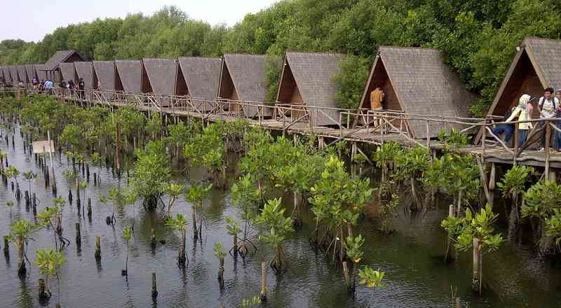
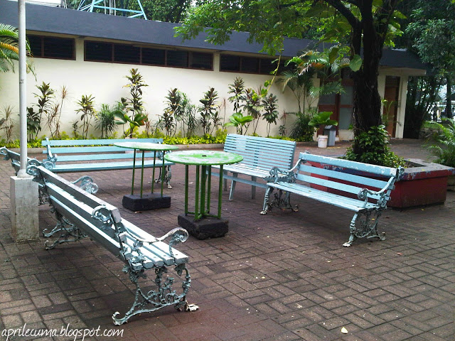
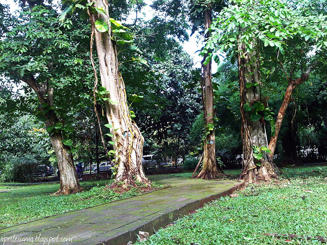
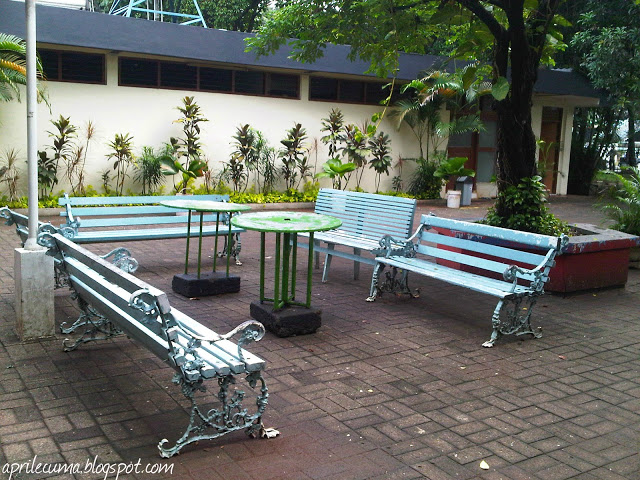
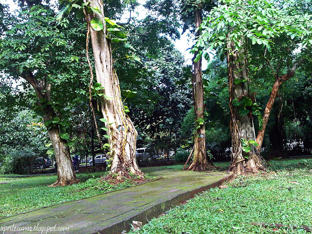
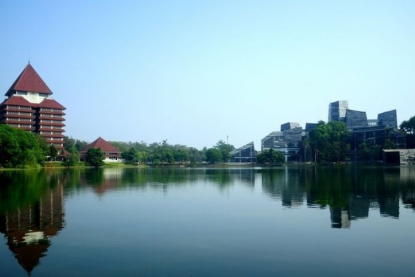
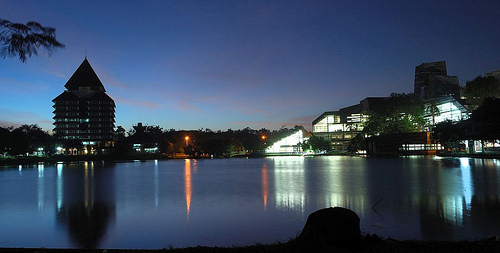
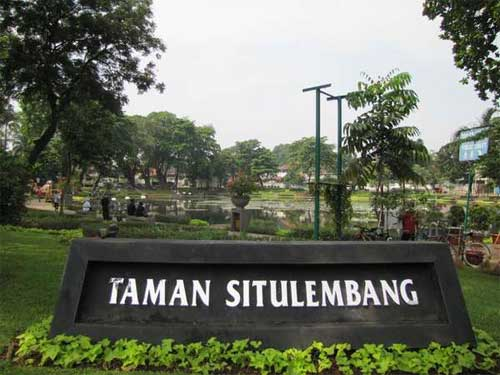
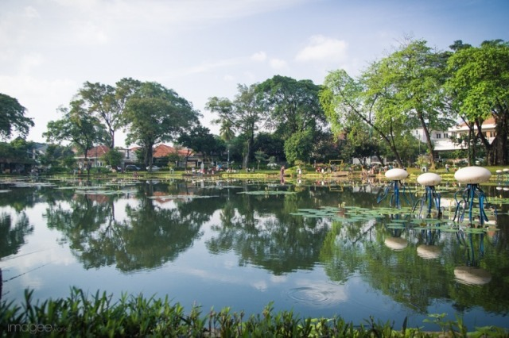
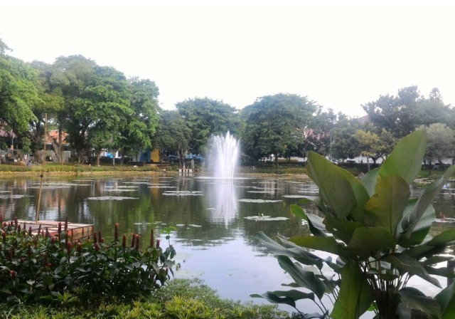

Overview
Guys, sudah tidak perlu ditanyakan lagi kalau Jakarta adalah sebuah kota yang super ramai setiap harinya. Kita semua tahu kalau hal seperti itu sudah umum di Jakarta dan kebanyakan dari kita pasti menemukan titik dimana kita merasa penat
ketika selalu hidup di kota dengan kondisi keseharian yang seperti itu. Nah! kali ini, JakartaLoka akan memberikan info tempat-tempat di Jakarta yang cocok buat kalian-kalian yang butuh waktu buat menyendiri untuk menghilangkan rasa jenuh kita.
1. Hutan Mangrove

Alamat: Jalan Garden House RT.8/RW.1 Kamal Muara Penjaringan, RT.8/RW.1, Kamal Muara, Penjaringan, Kota Jkt Utara, Daerah Khusus Ibukota Jakarta 14470
Buat yang belum pernah ke sini, sekilas hutan bakau ini bakal ngingetin kamu sama suasana khas hutan Kalimantan yang rame sama binatang dan jarang ketemu orang. Padahal lokasinya masih di Jakarta, lho. Tepatnya di kawasan wisata alam
Angke Kapuk. Dengan luas hampir 100 hektar, hutan mangrove ini adalah salah satu dari sedikit banget tempat yang cocok untuk menyendiri dan melepaskan beban pikiran di Jakarta. Selain bisa jalan-jalan di sepanjang sungainya, kamu juga bisa menyewa perahu buat keliling area ini.
2. Taman Krida Loka
 



Alamat: Jl. Stadion Senayan, RT.1/RW.3, Gelora, Jakarta Pusat, Kota Jakarta Pusat, Daerah Khusus Ibukota Jakarta 10270
Mau jogging tapi males menghirup asap knalpot? Atau mau piknik, tapi badan lagi nggak mampu nyetir ke Puncak? Nggak usah jauh-jauh! Sebelahan sama Gelora Bung Karno ada Taman Krida Loka. Mirip-mirip sama Kebun Raya Bogor, taman yang satu
ini adem banget, guys. Di sini ada jogging track sepanjang 1.000 meter yang lengkap sama petunjuk start dan finish. Ada banyak juga, lho, fasilitas olahraga lainnya yang bisa kamu temukan di sini kayak palang beban,
balok sit up, dan tangga mendatar. Sambil menyegarkan pikiran, kamu juga bisa menyehatkan badan, deh.
3. Danau UI


Alamat: Jl. Prof. DR. Mahar Mardjono, Pondok Cina, Beji, Kota Depok, Jawa Barat 16424
Kenapa harus danau UI? Kenapa bukan Setu Babakan? Setu Babakan ramenya bukan main kalau akhir pekan, tapi sepi dan enggak ada apa-apa juga saat hari kerja. Sementara itu, Danau UI alias Danau Salam hampir selalu sepi setiap saat, khususnya pada malam saat hari kerja.
Kalian yang lagi galau bisa menjadikan tempat ini sebagai tempat melampiaskan semua emosi Kalian. Caranya? hmm, mungkin kalian bisa teriak-teriak kayak orang gila atau sekadar duduk sambil mengulang kembali kenangan indah yang sudah lewat.
Saat malam hari, pemandangan di Danau UI juga lumayan menyegarkan mata karena lampu yang bersinar dari perpustakaan. Yang jelas, Danau UI enggak bakalan penuh orang (kecuali Minggu pagi).
4. Taman Situ Lembang



Alamat: Jl. Lembang Terusan No.D-59, RT.6/RW.5, Menteng, Kota Jakarta Pusat, Daerah Khusus Ibukota Jakarta 12910
Tidak jauh dari Taman Suropati, sekitar tiga ratus meter, hadir taman Situ Lembang. Pengunjung taman ini tidak sebanyak Taman Suropati karena lokasinya yang berada di tengah permikiman elit dan tidak dilalui kendaraan umum.
khususnya pada malam saat hari kerja. Lo yang lagi galau bisa menjadikan tempat ini sebagai tempat melampiaskan semua emosi lo. Lo bisa teriak-teriak kayak orang gila atau sekadar duduk sambil mengulang kembali kenangan indah yang sudah lewat.
Taman ini memiliki keunikan sendiri yaitu adanya danau yang cukup luas. Di permukaan danau itu kamu bisa menemukan tanaman teratai dan air mancur. Kadangkala ada pula pengunjung yang memancing di danau itu.
Sebenarnya masih banyak tempat-tempat wisata di Jakarta yang gak bisa kamu lewatkan begitu saja. Setelah berkunjung ke tempat-tempat tersebut semoga mengubah persepsi kamu tentang kota Jakarta. Selamat menjelajah Jakarta!